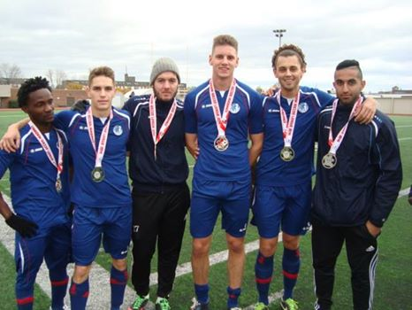

2015 Open TryoutsSaturday - March 17th, 2015 at 14:00 PM by SC WaterlooWe entered the 2014 season full of optimism, as both our Pro and 2nd Division teams were defending champions. However, injuries quickly made it obvious how difficult it would be to defend our titles.The Pro team had a difficult start to the campaign and was forced to play many players out of position, which made it difficult to remain stable at the back. Furthermore, opposition teams were more aware of our powerful counter attack and it was much more difficult to score goals than in the previous season. A late push saw us make the playoffs and salvage the season, but it was still disappointing to miss out on our title defence. |

2014 ReviewSaturday - March 10th, 2015 at 13:00 PM by Thomas Ang
We entered the 2014 season full of optimism, as both our Pro and 2nd Division teams were defending champions.
However, injuries quickly made it obvious how difficult it would be to defend our titles. |
We Are The Champions!Monday - November 4th, 2013 at 12:00 PM by Thomas AngOn November 3rd of 2013, All players aged 16 and above who are committed to a training regimen in a professional environment and would like the opportunity to tryout for the 2015 season should register ASAP. The U23 team defeated the Toronto Croatia reserve team 2-0 before the Pro team defeated Kingston FC 3-1. SC Waterloo also took home The Fair Play and Respect Award at the CSL Awards Ceremony the night before. Both teams finished mid-table in the regular season but went into the playoffs in flying form. The players will celebrate and rest a little before getting down to work in offseason training so they can come back in the spring ready to defend the 1st and 2nd division titles. To stay up-to-date with the club's offseason activities, please stay in touch on Facebook and Twitter. Have a great winter and see you in the spring! |